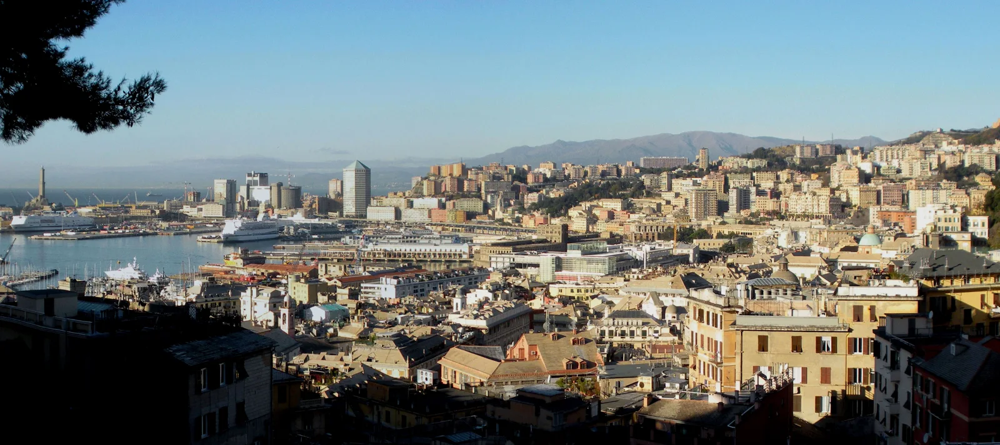

Vai al contenuto
Genova da scoprire
.
Home
Esplora Genova
Quiz
Statistiche
DAL MARE ALLE COLLINE
Genova da scoprire
Esplora la città, scopri le sue storie e mettiti alla prova.
Esplora Genova
→
Inizia quiz
→

Foto: Bbruno ·
Fonte
·
CC BY-SA 3.0
. Ridimensionata e convertita in WebP.